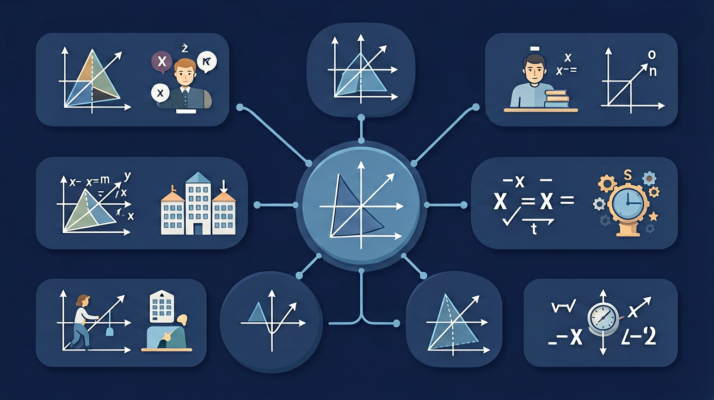

方程3x²-5=0的判别式Δ值是？
下列哪个是一元二次方程？
你已经会解 2x + 3 = 7（一次方程，最高次数1）。现在面临一个新问题：
一块正方形土地面积为25m²，边长是多少？即：x² = 25
这里 x 的最高次数是 2！这就是一元二次方程。
一次方程只有一个解，而二次方程最多有两个解！x² = 25 → x = 5 或 x = -5。
其中 a 是二次项系数，b 是一次项系数，c 是常数项。
例：将 2x² + 3x = 5 化为标准形式
→ 2x² + 3x - 5 = 0
a = 2，b = 3，c = -5
| 方程 | 是方程？ | 一元？ | 最高次=2？ | 结论 |
|---|---|---|---|---|
| x² - 3x + 2 = 0 | ✓ | ✓ | ✓ | 是 ✓ |
| x³ + x = 1 | ✓ | ✓ | ✗(3次) | 否 ✗ |
| x² + y = 3 | ✓ | ✗(两个) | ✓ | 否 ✗ |
在用公式求解之前，我们可以先"预判"方程有几个实数解——这就是判别式 Δ（读作"Delta"）的作用。
例：x² - 5x + 6 = 0（a=1, b=-5, c=6）
Δ = (-5)² - 4×1×6 = 25 - 24 = 1 > 0
→ 有两个不相等实数根 ✓
例：x² - 2x + 1 = 0（a=1, b=-2, c=1）
Δ = (-2)² - 4×1×1 = 4 - 4 = 0
→ 有两个相等实数根（重根）
古人经过配方法推导，得到了一个通用公式，可以解任意一元二次方程！
其中 ± 表示"加或减"，所以有两个根 x₁ 和 x₂。
解方程：2x² - 5x + 3 = 0
❌ 常见错误：Δ = b² - 4ac，当 b 为负数时
b = -5：(-5)² = 25 ✓（注意加括号！）
错误做法：-5² = -25 ✗（符号算错）
✅ 永远对 b 加括号：(-b)² ！
任务：一个矩形花园，长比宽多3米，面积为40平方米。求花园的长和宽。
设宽 x，长 x+3，方程：x(x+3)=40
x² + 3x - 40 = 0
Δ = 9 + 160 = 169，√169 = 13
x = (-3±13)/2 → x₁=5，x₂=-8（舍负）
宽=5米，长=8米。验算：5×8=40 ✓
一元二次方程的解对应抛物线与x轴的交点，图像理解代数
两根之和=-b/a，两根之积=c/a，不解方程也能知道根的性质
物理中的抛射物轨迹满足二次方程，数学与物理的美妙联系
y=ax²+bx+c 的图像与性质，与方程组合形成强大工具
一元二次方程y=ax²+bx+c的图像是一条抛物线。当a>0时，抛物线开口向上；当a<0时，抛物线开口向下。抛物线的顶点坐标为(-b/(2a), c-b²/(4a))，对称轴为直线x=-b/(2a)。例如，方程y=x²-4x+3的顶点坐标为(2, -1)，对称轴为x=2。通过图像可以直观地了解方程的性质，比如开口方向、顶点位置、对称轴等。此外，抛物线与x轴的交点即为方程的实数根，因此通过图像可以判断方程的根的情况：有两个交点时Δ>0，有一个交点时Δ=0，无交点时Δ<0。
判别式Δ=b²-4ac决定方程ax²+bx+c=0的根的性质。当Δ>0时，如x²-5x+6=0（Δ=1）有两个不同实数根2和3；Δ=0时，如x²-4x+4=0（Δ=0）有重根x=2；Δ<0时，如x²+x+1=0（Δ=-3）无实数根。物理中的抛体运动高度公式h=-5t²+20t，令h=0解得Δ=400，说明物体两次经过地面（t=0和4秒）。通过判别式分析，学生能快速预判方程解的情况，这对后续学习复数也有铺垫作用。